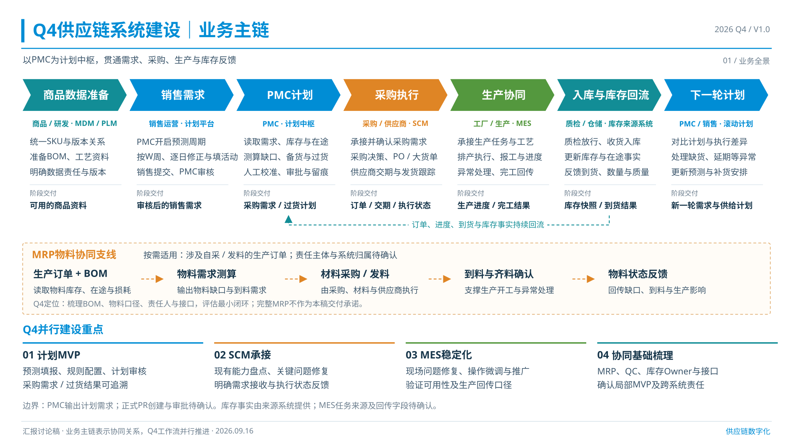
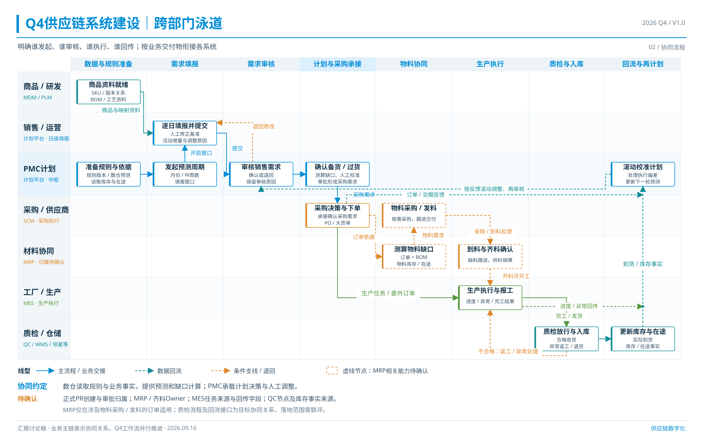

<!doctype html>
<html lang="zh-CN">
<meta charset="utf-8">
<meta name="viewport" content="width=device-width,initial-scale=1">
<title>Q4供应链系统建设汇报图 V1.0</title>
<style>
*{box-sizing:border-box}body{margin:0;background:#eef2f5;color:#17364b;font-family:"PingFang SC","Microsoft YaHei",sans-serif;letter-spacing:0}header{padding:18px 28px;background:white;border-bottom:1px solid #cfdae2;display:flex;align-items:center;justify-content:space-between;gap:20px}h1{font-size:20px;margin:0;font-weight:600}nav{display:flex;gap:18px;flex-wrap:wrap}a{color:#007ab8;text-decoration:none;font-size:14px}main{max-width:1800px;margin:auto;padding:24px}figure{margin:0 0 28px}img{display:block;width:100%;height:auto;background:white}figcaption{display:flex;justify-content:space-between;gap:12px;margin:10px 0;font-size:15px}@media(max-width:700px){header{align-items:flex-start;flex-direction:column}main{padding:10px}figcaption{flex-wrap:wrap}}
</style>
<header><h1>Q4供应链系统建设汇报图</h1><nav><a href="#business">业务主链</a><a href="#swimlane">跨部门泳道</a><a href="README.md">汇报口径与来源</a></nav></header>
<main>
<figure id="business"><figcaption><span>01 业务主链 · V1.0</span><nav><a href="01_Q4供应链业务主链图_V1.0.png" download>下载高清PNG</a><a href="01_Q4供应链业务主链图_V1.0.svg" download>下载可编辑SVG</a></nav></figcaption></figure>
<figure id="swimlane"><figcaption><span>02 跨部门泳道 · V1.0</span><nav><a href="02_Q4供应链跨部门泳道图_V1.0.png" download>下载高清PNG</a><a href="02_Q4供应链跨部门泳道图_V1.0.svg" download>下载可编辑SVG</a></nav></figcaption></figure>
</main>
</html>
